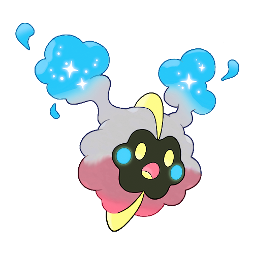
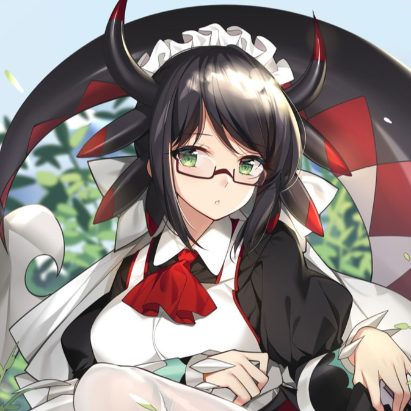

Meet the RPG Dungeon Team
I want to speak to a manager.
Here's a list of the lovely individuals who have done the most to make RPG Dungeon what it is today.
Zak
he/himZak is the founder of RPG Dungeon and is thus responsible for making Goku beat up a pony. He is a fan of Fire Emblem, and is well-known for letting fun little one-off ideas spiral far out of control. We love him for it. He also created the Risk of Rain 2 expansion pack.
Grey
they/them
Grey is your illustrious webmaster and writer of text galore. They wield the game balance hammer with extreme prejudice. Concept characters the world over tremble to hear their username. They're also a college student or something boring like that.
Xylo
he/him
Xy is the guy who keeps RPG Dungeon moving along even when the rest of us have life commitments to ignore. He's the creative type, and has a host of unpublished character ideas to rival Zak's. He's responsible for the Final Fantasy XIV expansion, which has probably gained a new entry in the time it took you to read this bio.